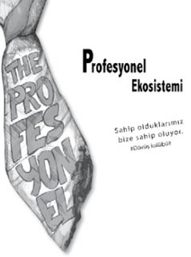

Profesyonel tiplemeler
Tespit, profesyonelin hayata içinden baktığı ve onu anlamlandırdığı en değerli lensidir. Tespit lensine hâkim profesyonel; tanıdığı ve / veya tanımadığı tüm karakterlere dair, iç sesinin öncülüğünde, seri ve acımasız yorumlar yapmaktan kendini alıkoyamaz. Yılların deneyimi ve travmaları ile biriktirmiş olduğu bok atma kütüphanesinde hazır bulunan soruları sorar, yorumları yapar ve karakterleri kendinden emin argümanlarla kategorize eder. Kategorizasyon, modern profesyonel hayatın adam asmaca oyunudur.